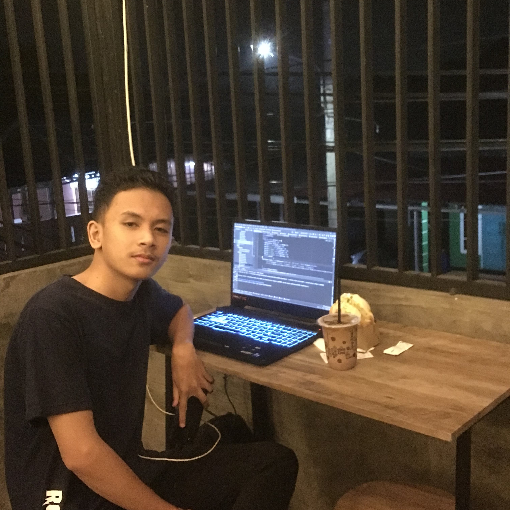
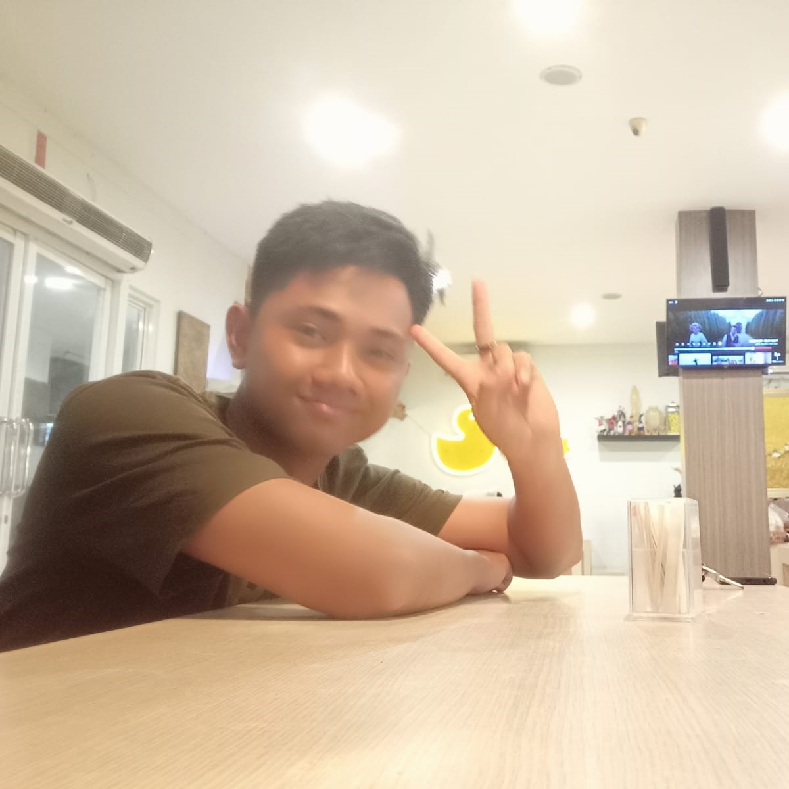
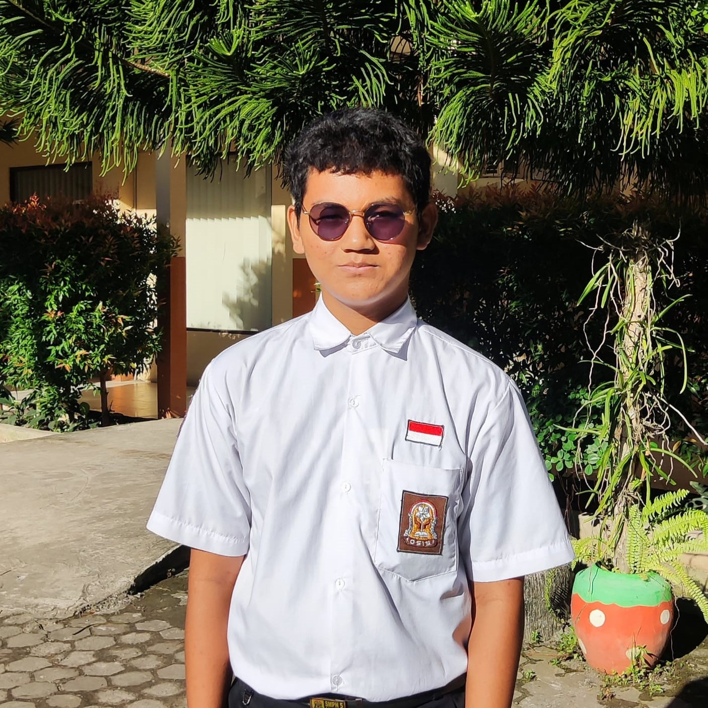
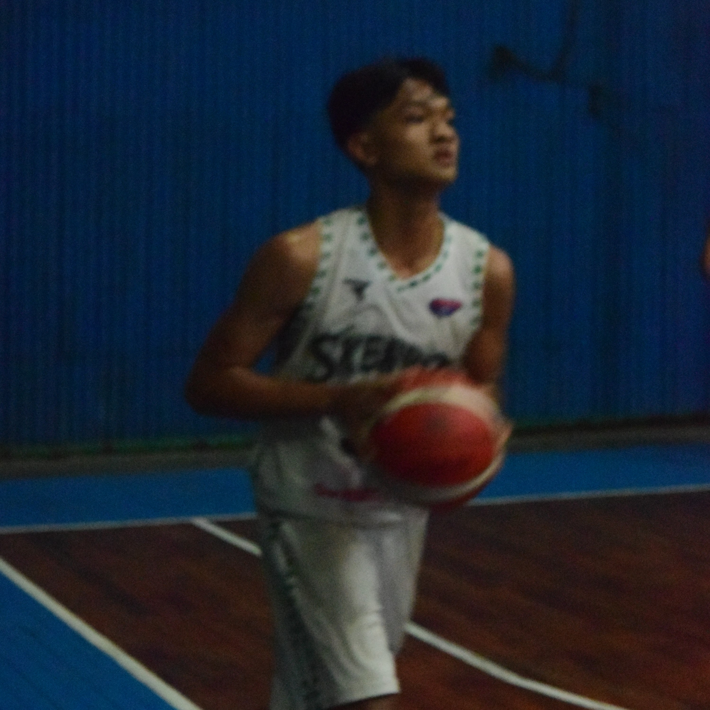

Muhammad Hafizd (Membuat Website)
Hallo Perkenalkan Nama Saya Muhammad Hafizd Kelas XI Rpl 2,Peran Saya Disini Sebagai Membuat Sebuah Website Artikel Tentang Hukum Tata Negara dan Peraturan Perundang-undanganSaya Disini Membuat Website Menggunakan Pure Bootstrap
Placeholder
Muhammad Luthfi
Hallo Perkenalkan Nama Saya Muhammad Luthfi Kelas XI Rpl 2
Placeholder
Gt. Muhammad Syahid Nizar
Hallo Perkenalkan Nama Saya Gt. Muhammad Syahid Nizar Kelas XI Rpl 2
Placeholder
Ridhwan Siddiiqi
Hallo Perkenalkan Nama Saya Ridhwan Shidiqqi Kelas XI Rpl 2
Placeholder